01
第一部分
从商家 Claw 真实案例聊起
一个给商家用的数字员工，到底能干什么？
先用真实商家、真实截图和真实采纳动作建立直觉，再进入 to be Agent 的实现方案。
- 商家 Claw 的真实案例：生图、商圈对标、菜单排序
- to be Agent 上我们做了什么
- LLM 选型、Harness / Agent Loop、评测与质量保障
课程目录
这次分享分成三段：先从商家 Claw 的真实案例进入，看看我们在 to be Agent 上做了什么；再看行业前沿仍在快速变化，后面可能还会发生什么；最后回到“人之为人”，讨论当智力可以被调度，我们要怎么选择自己的站位。
一个给商家用的数字员工，到底能干什么？
先用真实商家、真实截图和真实采纳动作建立直觉，再进入 to be Agent 的实现方案。
整个行业仍在高度不确定性之中，后面还可能发生什么？
不追求给定论，而是用几个仍在演进的方向，理解 AI 能力边界还会继续移动。
AI 能做更多事之后，前线价值会迁移到哪里？
不急着回答谁会被替代，先看清一个变化：技能变得普及之后，真正被放大的是会定义问题、组织资源、验证结果的人。
Part 1
从真实商家、真实截图和真实采纳动作开始，看一个给商家用的数字员工如何进入经营现场。
沅湘小馆现场看到 AI 生成的芒种海报后直接换上；宅门记忆则提供了完整门店装修 Before / After 素材。这个案例的重点不是“AI 建议看起来不错”，而是 AI 生成的经营素材真的进入了商家动作。
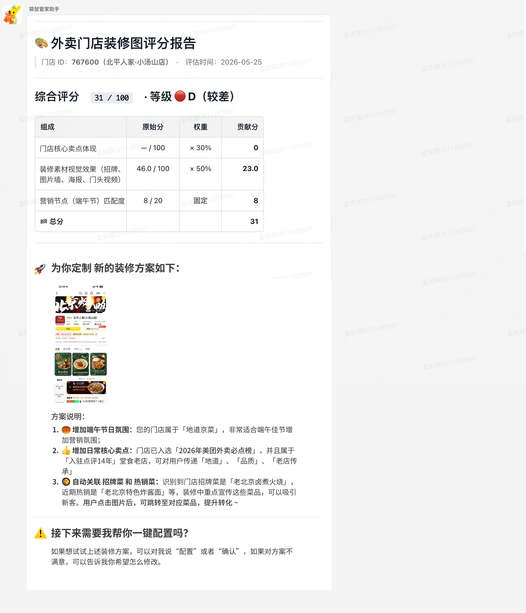
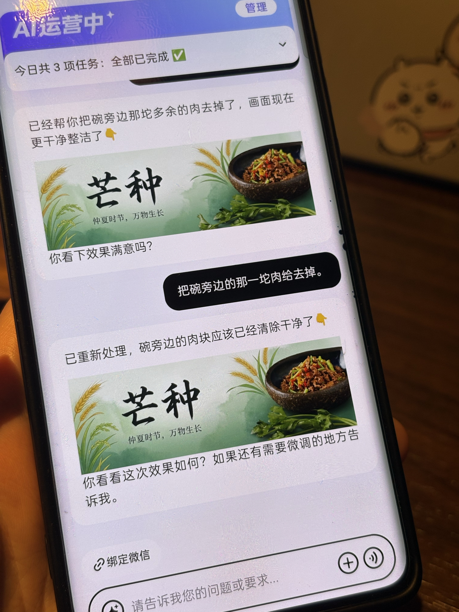
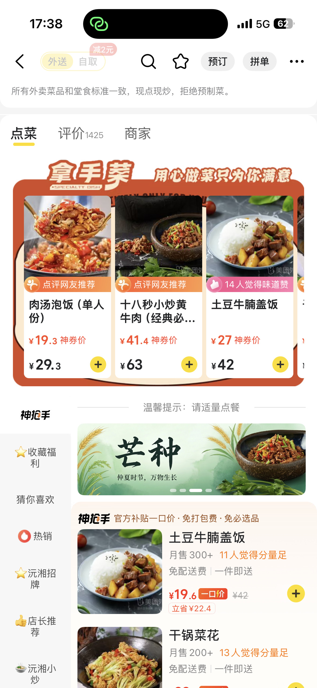
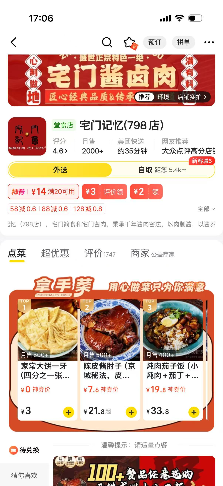
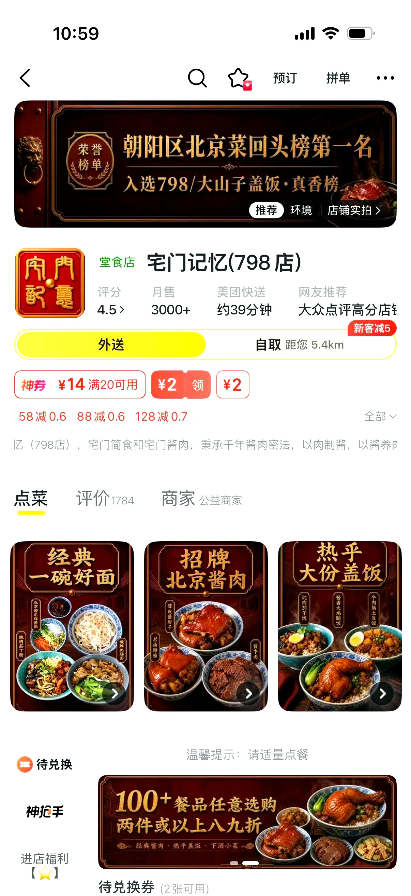
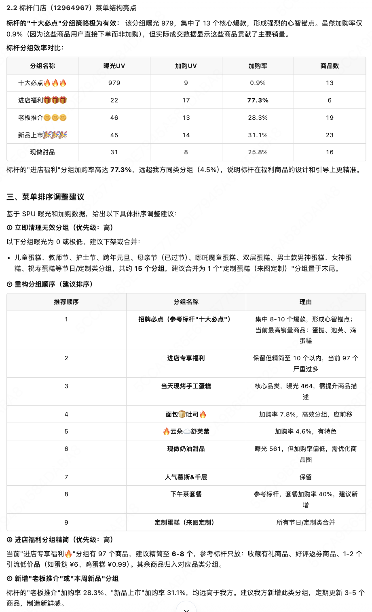
同商圈多个商家是同货源，商家 Claw 基于标杆给出菜单结构及活动调整建议，商家当场采纳。这里的关键不是“AI 说得有道理”，而是它把分散证据组织成了可推进的经营建议。
第酒烧场采纳了基于销量、加购和转化数据的菜单排序建议。采纳后，在未剔除其他动作干扰的情况下，下单转化提升 3.4pp。但上新和组套建议没有被采纳，因为真实经营里还有厨房、食材、区域口味和用餐偏好这些约束。
排序建议被采纳后出现的指标变化；该结果未剔除其他经营动作干扰。
Product
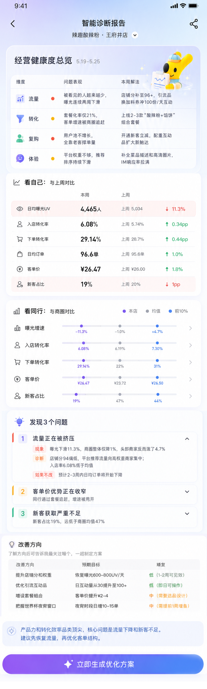
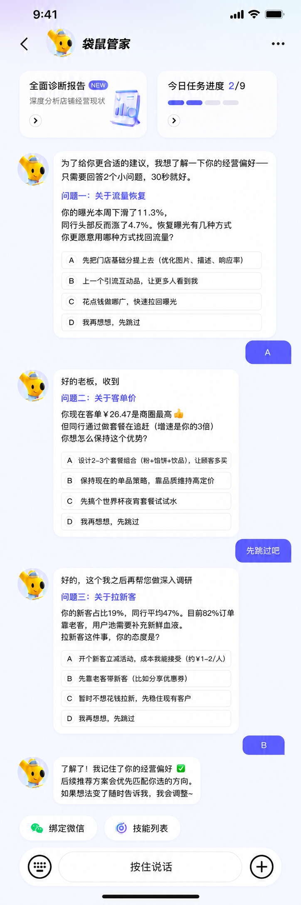
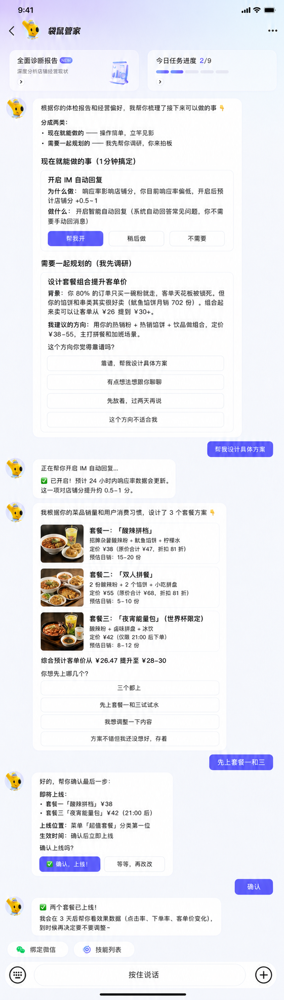
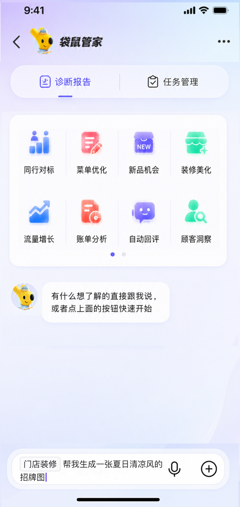
System
前面的案例看到的是结果：素材被采纳、证据推动沟通、排序建议进入经营动作。回到系统里，一个商家问题要先被理解，再被组织进 Agent Loop，最后通过工具、数据和评测进入可执行结果。
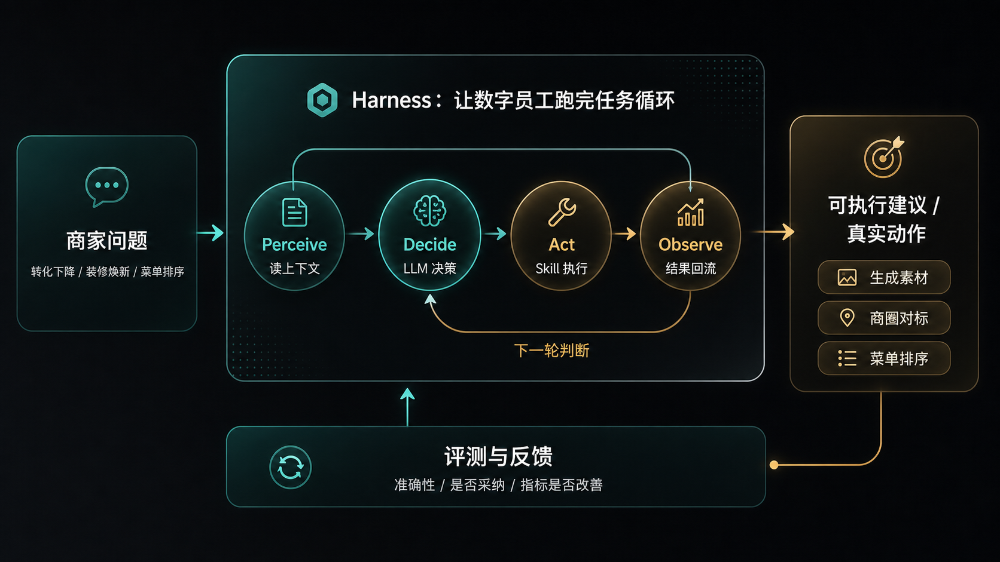
来自经营、活动、商品、装修、规则等真实场景。
理解目标、推理路径、判断下一步该查什么或做什么。
把模型组织进 Agent Loop，让它按步骤执行、观察和修正。
查证据、读状态、调能力，把语言判断接到真实业务世界。
持续监控软错误、证据链、稳定性、成本和业务结果。
输出经营建议、素材方案、操作路径，或进入人工确认。
它让系统不再只是固定流程自动化，而能面对新问题理解目标、寻找路径、在失败后换方向。
它负责循环、工具调用、重试、停止、确认和兜底，让模型在可预期的轨道里完成任务。
当错误变得像人一样“看似合理”，评测就要盯住证据链、稳定性、成本和真实业务效果。
3.3 LLM
Agent 不只是因为有循环才成立，而是因为 LLM 已经具备理解目标、规划路径、调用工具、失败后换方向的能力。模型越会自己找路，越需要同时看能力、成本、稳定性和边界。
Pre-train 让模型学会语言和世界知识；SFT 让模型学会按人的指令格式做事；RL 在复杂、可验证的任务里，让模型自己探索路径，再根据结果反馈调整行为。
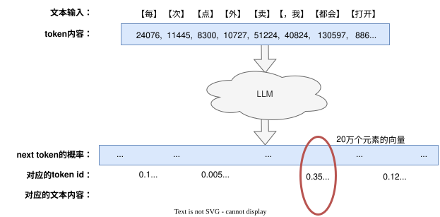
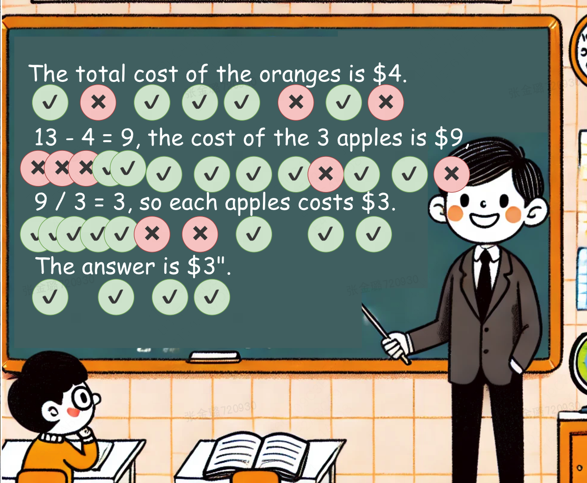
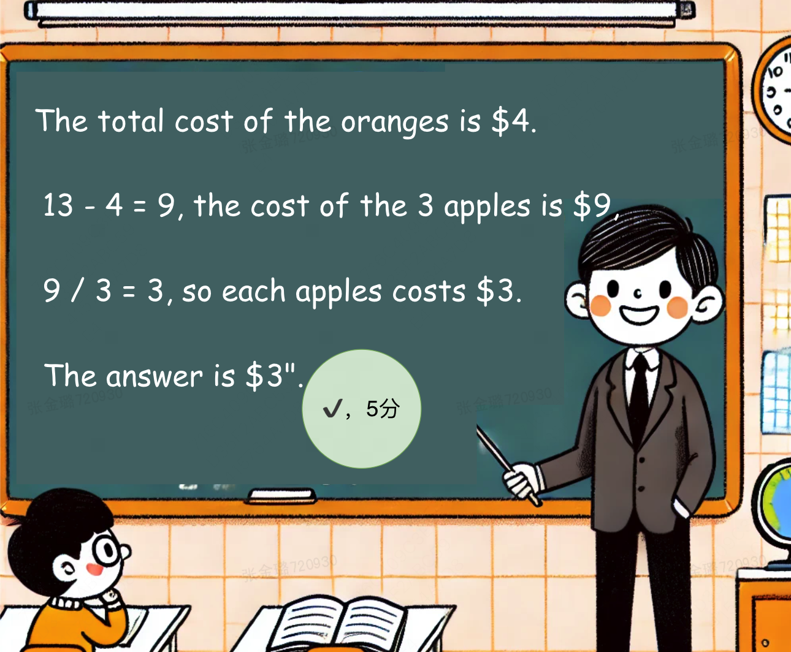
同样是 1M tokens，不同模型成本差异很大；但真正决定是否划算的，是任务能不能稳定完成、上下文能不能复用、失败能不能及时停下来。
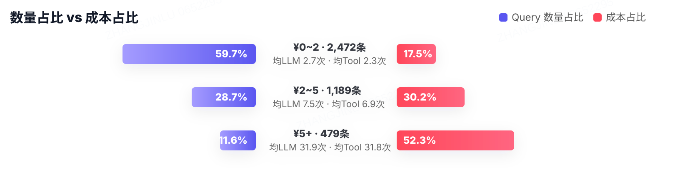
| 模型 / 版本 | 加权成本 / 1M tokens | 适合说明 |
|---|---|---|
| DeepSeek V4-Pro 促销价 | ¥0.2994 | 极低成本口径 |
| DeepSeek V4-Pro 原价 | ¥1.1981 | 约为 Opus 的 1/6 |
| Kimi K2.6 | ¥1.6390 | 约为 Opus 的 1/4 到 1/5 |
| Claude Sonnet 4.6 | ¥4.3770 | 中高成本口径 |
| Claude Opus 4.6 / 4.7 | ¥7.2948 | 当前强 Agent 模型成本口径 |
框架机制、工具质量、环境不稳定和使用不当都会放大成本。
动态 DOM、截图、长日志会破坏缓存连续性，让成本膨胀。
“导出开业 30 天内未开启明厨亮灶的门店列表”没有现成路径。强模型会搜索能力、猜接口、写脚本、扫页面、解析 JS bundle，最后甚至用替代指标把任务做成。
LLM 的价值是会找路，风险也是会乱找路。Harness 的价值，是让它在可控轨道上找路。
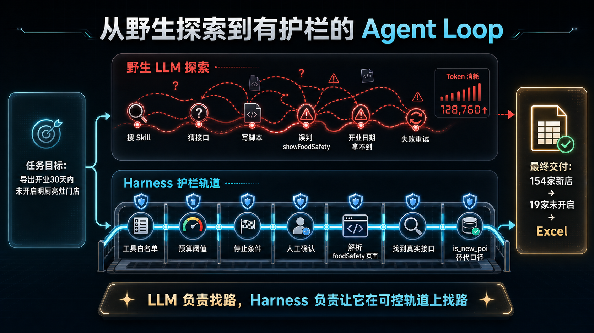
现场不需要逐字读完，只看几个高亮节点：失败、试探、误判、换方向、替代口径、交付。
3.4 Harness
前面明厨亮灶的例子说明，LLM 能在没有现成路径时主动找路；但要把这种能力放进真实商家场景，还需要流程、工具、预算和边界一起工作。
一个新 BD 接到商家问题，不会只靠脑子想一句答案，而是会确认问题、查数据、看规则、判断证据，再决定继续追问、推进执行，还是交给更合适的人。Harness 做的就是把这套工作习惯系统化。
把“最近单量差怎么办”拆成可执行步骤：先看流量、进店、下单、活动、评价和商品，而不是直接给一句泛泛建议。
LLM 判断要查什么，Harness 把数据、知识库和业务工具的调用过程跑稳，避免模型自己去猜不存在的接口。
工具返回后继续判断：证据够不够，口径有没有冲突，是否需要补查，能不能进入下一步。
决定什么时候继续、什么时候停止、什么时候二次确认、什么时候交给人。商家经营动作越真实，这一点越关键。
会主动找路，也可能反复试探、误判口径、猜接口、写临时脚本，成本和动作边界都不稳定。
把探索收束到白名单工具、预算阈值、停止条件和人工确认里，让 Agent 在真实业务里可运行、可追踪、可兜底。
LLM 负责找路，Harness 负责让它在可控轨道上找路。
3.5 评测
Agent 系统的错误不总是接口报错，也可能是答案看起来合理、路径看起来努力，但证据链、口径、成本或动作边界出了问题。
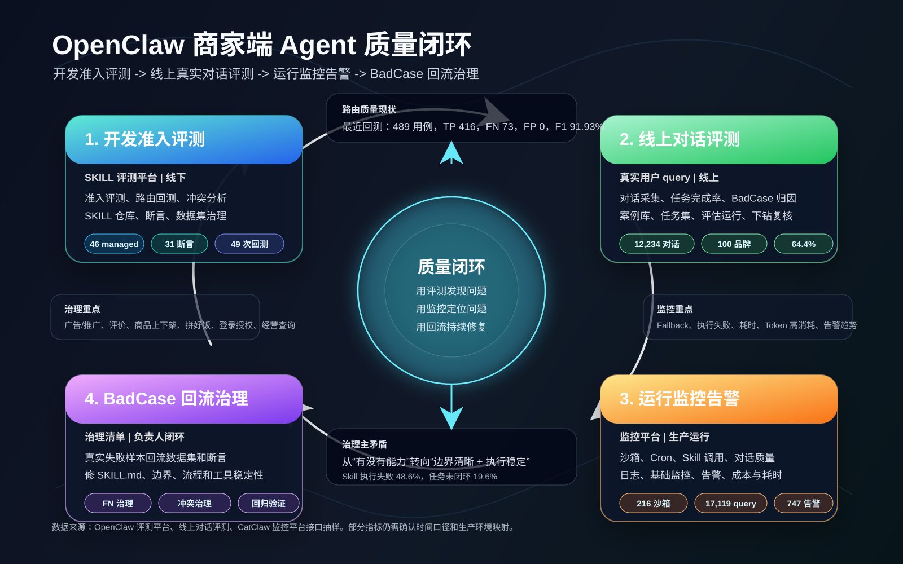
上线前看准入，线上看真实对话，运行中看监控告警，失败后把 BadCase 回流成新的样本、断言和规则。
答案像是合理的，但引用的数据、规则或工具来源并不能支持结论。
同一个问题多问几次，路径和结果可能变化，商家拿到的建议不一致。
先查什么、后查什么会影响最终判断，Agent 不能每次都随缘组织动作。
多个工具、页面和数据源给出不同信号时，需要判断该相信哪个口径。
模型会像明厨亮灶案例一样找替代证据；这有价值，也必须被边界约束。
模型更强之后会尝试新路径，旧评测不一定能覆盖新的行为模式。
Part 2
这一部分不追求给出定论，而是看几个仍在演进的方向，以及这些方向成熟后，我们使用 AI 的方式可能如何变化。
4.3 方向 1
当历史对话、商家资料、经营动作和失败经验越来越多，AI 必须有技术方案处理“过去”。Memory / Dreaming 是人类最容易理解的路线，但不是唯一答案。
如果每次任务都重新解释背景，Agent 的上限会被上下文、成本和用户耐心卡住。前沿方向正在解决同一个问题：怎样让系统带着过去的经验继续工作。
Train with finite context, use as infinite context.
我们可能不再反复补充背景，而是让 AI 自动沉淀偏好、复盘失败路径、整理长期经验，再把这些经验带入下一次任务。
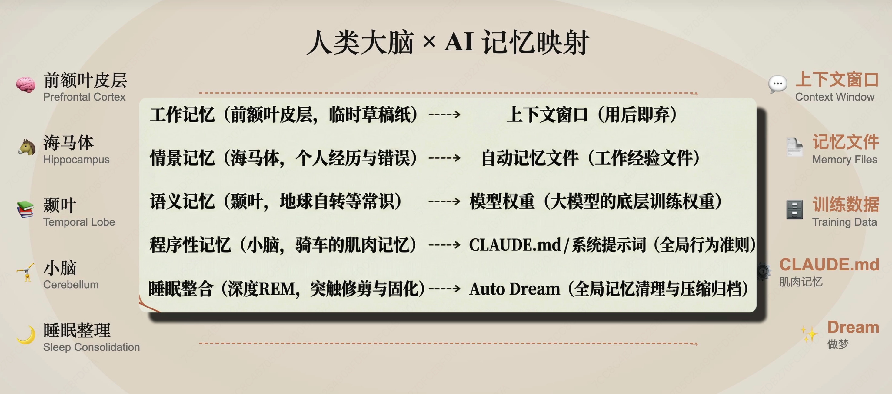
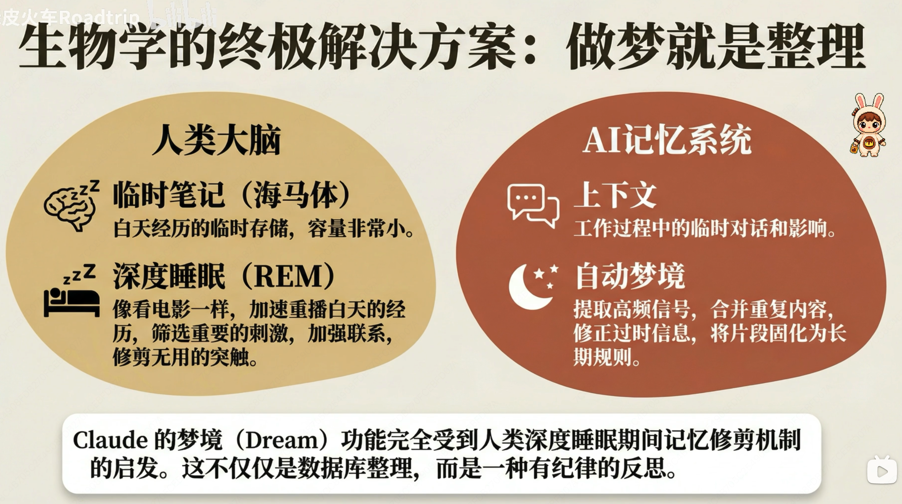
研究进展：从把历史对话塞进上下文，走向长期记忆、经验压缩和后台复盘。
使用变化：系统把碎片经验整理成人可读的记忆文件、规则和复盘，下次任务直接继承。
研究进展：训练和推理阶段都在变长，1M 级上下文已经进入前沿模型能力范围。
使用变化：一次任务现场可以带着更多文档、规则、聊天记录和经营历史一起工作。
研究进展：把长期经验、知识和模式压进模型参数里，不一定以人可读文件存在。
使用变化：经验可能被更深层地内化进模型能力，而不是每次都显式拿出来读。
4.4 方向 2
语言模型已经把“读、写、对齐”相对收进同一套 Transformer 范式里；图像和多模态还长期是理解一套、生成一套、对齐一套。最近一些工作开始露出“大一统”的影子。
未来的 AI 使用姿势，可能不再区分“让它看图、让它生图、让它写文案、让它操作工具”。用户给出混合材料和目标，模型系统自己完成理解、生成、编辑、对齐和行动。
竞争不只看单项能力榜单，而要看一套系统能否把多模态输入、生成能力、工具行动、成本和延迟放在一起优化。
读、写、偏好对齐被收进同一套语言模型范式。
从三套能力栈，走向统一的多模态模型系统。
像打字机一样从左到右，一个 token 接一个 token 输出。它稳定、成熟，但延迟和并行度会受生成顺序限制。
ELF 提示语言生成未必只能在离散 token 上进行，也可能进入 continuous embedding / latent 空间，通过 diffusion 或 flow 完成生成，再映射回 token。
如果并行生成和低延迟成熟，用户首先感受到的不是论文术语，而是 AI 响应更快、更实时、更像一个可以连续协作的系统。
4.5 方向 3
这里的重点不是科幻式“AI 自我觉醒”，而是一个更现实的趋势：AI 正在接管越来越多改进 AI 系统本身的工作，从写代码、跑实验、修 bug、做评测，到提出下一步实验。
Anthropic 的主线很清楚：AI 参与开发的范围正在扩大，但完整 recursive self-improvement 还没有发生，也不必然发生。真正已经开始变化的是组织瓶颈：执行被加速以后，目标选择、结果验证、风险控制和协同会成为更稀缺的环节。
Anthropic Institute 原文Anthropic 引用外部趋势：AI 能可靠独立完成的任务时长约每 4 个月翻倍；示例从 2024 年约 4 分钟，到 2026 年约 12 小时。
截至 2026 年 5 月，Anthropic 称其合入代码中超过 80% 可归因于 Claude。这个数字是方向信号，不等同于质量。
2026 年第二季度，典型工程师每天合入代码量约为 2024 年的 8 倍。代码行数不是生产力本身，但说明执行环节在加速。
Claude 曾完成 800 多个修复，把一类 API 错误降低 1000 倍；过去“不值得做”的改善项，可能突然变得值得做。
商家 Claw 下一阶段不只是回答商家问题，也可以让 AI 参与发现高频失败、归因能力缺口、生成评测样本、提出工具和评测改进建议，再由人审核进入系统迭代。
Part 3
这不是一句“AI 替不替代人”的单选题。更重要的变化是：技能会被普及，能力会被调度，人的位置会从亲自执行迁移到定义目标、组织资源、验证结果和承担责任。
当某种能力从少数人掌握，变成更多人可以调用，它不会简单抹掉人的价值，而是重定价“什么才稀缺”。稀缺点会从“我会不会做”，迁移到“我能不能把更复杂的事组织起来”。
商家信不信、动作能不能落地、什么时候该推、什么时候该停，这些判断来自关系、现场感和责任位置。AI 给的是候选路径，前线同学决定哪些路径值得被执行。
不要用半年前的印象判断 AI。把最新能力放进真实问题里试，知道它现在能做到哪里，也知道哪里还不稳。
把“帮商家变好”拆成看数据、找证据、生成方案、准备沟通、跟踪效果，让 AI 接住明确的工作单元。
AI 给的是候选路径。最终要看商家是否采纳、经营是否改善、风险是否可控，这一步仍然需要人来判断。